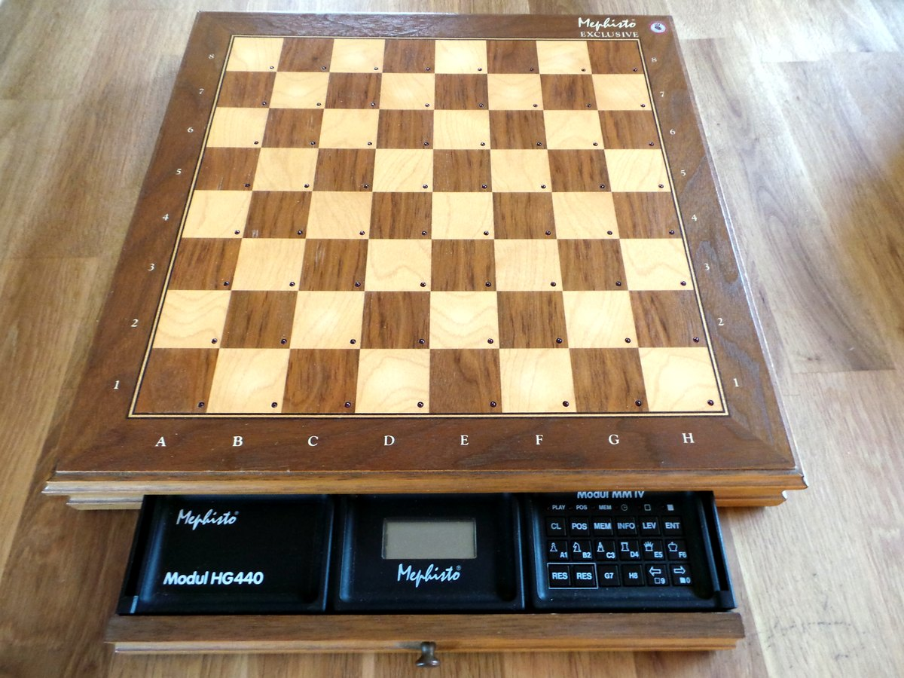

1983
Hegener & Glaser (Munich, West Germany)
Mephisto Modular Autosensory Chess Board
A durable pressure-sensing chess board onto which you snap swappable processors — the physical interface outlives the computation

Overview
Deep dive
Team & pioneers
- Hegener & Glaser (H+G). Munich semiconductor firm turned dominant German chess-computer maker; introduced the Modular system in 1983.
- Richard Lang. Programmed the strongest Mephisto engines; his programs won six World Computer Chess Championships 1984-1990.
- Manfred Hegener & Florian Glaser. Founders of Hegener & Glaser (1969).